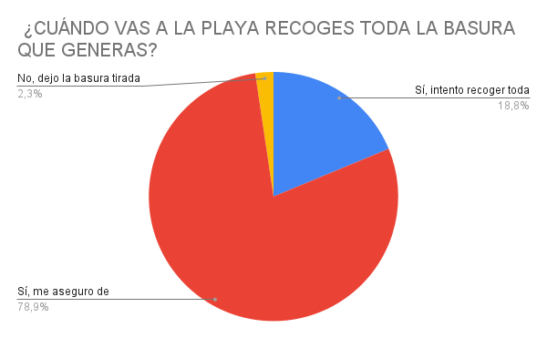
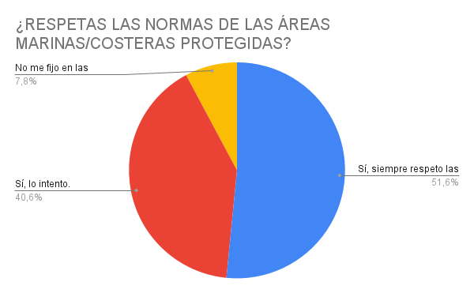

Hemos propuesto preguntas que demuestran generalmente lo fácil que es ayudar a conseguir este objetivo de manera individual, aunque algunos individuos no se vean capaces de realizarlas por una falta de esfuerzo propio.
Estas fueron las preguntas y las posibles respuestas:
·¿Sueles evitar productos que utilizan plástico?
Lo intento, pero hay veces que no lo puedo evitar.
Me da igual si es o no es de plástico.
No lo intento evitar y prefiero los productos de plástico.
·¿Cuándo vas a la playa recoges toda la basura que generas?
Sí, me aseguro de recoger toda la basura que genero.
Sí, intento recoger toda la basura que hay en las playas aunque no sea mía.
No, dejo la basura tirada en la playa.
·¿Respetas las normas de las áreas marinas/costeras protegidas?
Sí, siempre respeto las normas de protección a la naturaleza.
Sí, lo intento.
No me fijo en las normas ya que la naturaleza es de todos.
¿Sueles evitar productos que utilizan plástico?
¿Cuándo vas a la playa recoges toda la basura que generas?
¿Respetas las normas de las áreas marinas/costeras protegidas?


Después de analizar estos datos, podemos comprobar que hay un alto porcentaje de personas que llegan al esfuerzo mínimo, pero que podrían poner algo más de empeño para cuidar la vida submarina.